1、解决订单系统诸多问题的核心技术：消息中间件
今天一上班，小猛非常期待的跑到了明哥的工位旁：明哥，现在订单系统的所有问题我们都搞清楚了，是不是可以开始研究对应的技术方案了啊？
明哥说：当然了，今天开始我们要慢慢调研和落地一些技术方案，去逐步解决订单系统面临的各种问题了。
首先第一步，我先给你介绍一个用来解决我们订单系统问题的核心技术，消息中间件。
明哥问：你对消息中间件有了解过吗？
小猛说：这个还真没有，因为平时在学校里都做一些CRUD的项目，像什么酒店管理系统啊，图书馆管理系统之类的。
明哥笑了笑：没关系，我先简单给你介绍一下消息中间件的概念，你肯定一听就懂，并不难。
2、了解消息中间件之前，先认识一下什么是“同步”
首先，我们想一下，通常而言，在公司里可能会存在多个业务系统，这些业务系统之间的通信都是进行接口调用的。明哥说着在纸上画出了一幅简易的示意图。
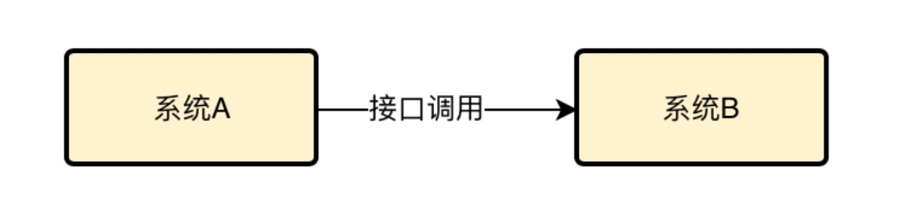
现在假设系统A收到了一个请求，可能是用户通过浏览器或者APP发起的，这个时候系统A收到请求之后就会立马去调用系统B，然后系统B返回结果给系统A之后，系统A才能返回结果给用户，是不是这样？
明哥接着在图里补充了一些东西。
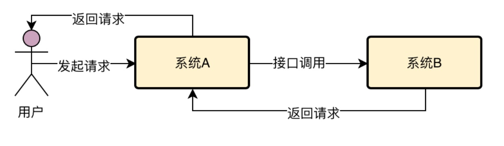
小猛点点头，确实是的，因为通过一个复杂的系统去实现各种复杂的功能，满足用户的需求，简化来说，大致确实如此。
明哥接着说，那么在这种情况下，用户发起一个请求，系统A收到请求，接着系统A必须立马去调用系统B，直到系统B返回了，系统A才能返回结果给用户，这种模式其实就是所谓的“同步调用”。
这个同步的意思，就是各个系统的联动都是同步依次进行的，一个系统先动，然后立马带动另外一个系统一起动，最后大家依次干完了以后，再返回结果。
这就是同步调用最通俗的解释了，不是那种学术型的解释。
3、再来看看依托消息中间件如何实现异步？
明哥接着说，现在假设我们在系统A和系统B之间加入了一个东西，这个东西就叫做“消息中间件”，但是这五个字念着太麻烦了，干脆就简单点，叫MQ就行了，英文全称就是“Message Queue”，也就是消息队列。
然后明哥在图里加入了消息中间件。
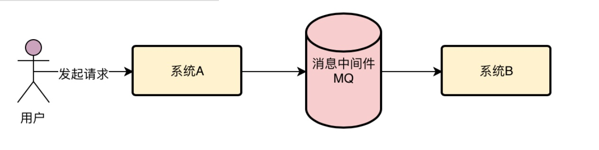
加入了这个消息中间件以后，系统A和系统B之间是怎么通信的呢？
很简单，之所以叫这个东西 是“消息中间件”，说明他里面一个核心的概念就是“消息”。所以系统A一般会发送一个消息给MQ。
接着系统A就认为自己的工作干完了，然后就直接返回结果给用户了，明哥在图里加了点东西，而且还标号了各个步骤执行的顺序。
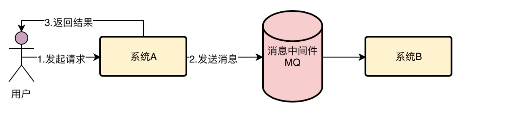
此时小猛很疑惑，那系统B什么时候执行自己的任务呢？
明哥紧接着说：别着急，马上就到系统B了。你先思考一下，这个时候系统A跟系统B是不是看着就没什么关系了？因为系统A要做的事情只是接收请求，发送消息到MQ，然后就返回结果给用户，系统B他就不管了。
然后系统B根据自己的情况，可能会在系统A投递消息到MQ之后的1秒内，也可能是1分钟之后，也可能是1小时之后，多长时间都有可能，反正不管是多长时间后，系统B肯定会从MQ里获取到一条属于自己的消息。
然后获取到消息之后，根据消息的指示再完成自己的工作。
明哥说着继续在图里补充了一些东西。
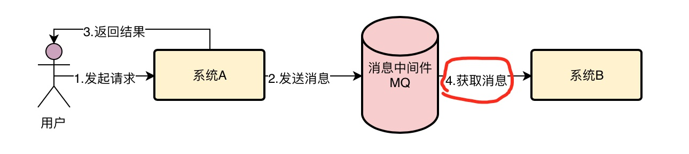
在这种情况下，系统A和系统B有没有实现通信？
有，因为系统A发了一个消息给MQ，系统B从MQ里获取了一个消息，干了自己该干的工作。
那么系统A跟系统B之间是不是同步调用？
不是，因为系统A仅仅是发个消息到MQ，至于系统B什么时候获取消息，有没有获取消息，他是不管的。
所以这种情况下，我们说系统A和系统B是异步调用。
所谓异步调用，意思就是系统A先干了自己的工作，然后想办法去通知了系统B。
但是系统B什么时候收到通知？什么时候去干自己的工作？这个系统A不管，不想管，也没法管，跟他就没关系了。
但是最终在正常下，系统B总会获取到这个通知，然后干自己该干的事儿。
这种情况下，并不是系统A动了，系统B就立马同步动，他们不是同步的。而是系统A动了，但是系统B可能过一会儿才动，他们的步调是不一样的，所以是异步的。
这就是所谓的“异步调用”最通俗的解释了，完全没任何的学术痕迹。
4、消息中间件是用来干什么的？
听到这里，小猛又觉得自己面前打开了一扇新的大门，以前自己就知道做CRUD之类的事儿，最多是用Spring Cloud、Dubbo之类的技术搭建过几个简单的Demo，让不同的系统实现同步调用。
但是自己从没想过系统之间还可以进行异步调用！
所以听到这里，小猛不禁脱口而出：所以消息中间件，其实就是一种系统，他自己也是独立部署的，然后让我们的两个系统之间通过发消息和收消息，来进行异步的调用，而不是仅仅局限于同步调用。
明哥大赞：精辟的总结！
5、那么消息中间件到底有什么用呢？
小猛接着提出了一个疑问：那让两个系统之间不是同步调用，而是异步调用，有什么用呢？换句话说，我们可以用消息中间件来干什么？
明哥说：这个用处可多了去了，主要的作用有这么几个，包括异步化提升性能，降低系统耦合，流量削峰，等等。
比如，现在假设系统A要调用系统B干一个事儿，然后系统A先执行一些操作，需要耗费20ms，接着系统B执行一些操作要耗费200ms，总共就要耗费220ms。明哥说着重新画了一个图做了一个示意。
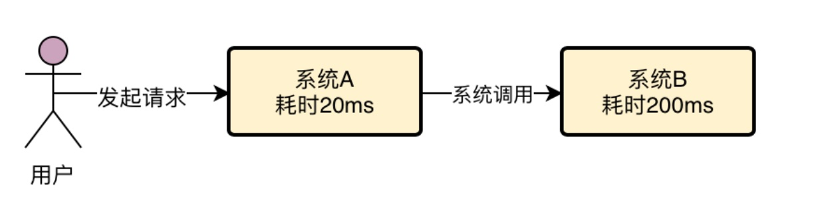
这个时候等系统A和系统B都干完活儿，才能返回结果给用户，要等待220ms。
那么如果在系统A和系统B之间加一个MQ呢？
系统A干完自己的事情，就20ms，然后发送一个消息到MQ，就5ms，然后就直接返回结果给用户了。
也就是说，用户仅仅等待25ms就收到了结果。
然后系统B从MQ里获取消息，接着花费200ms去执行，但是这个200ms就跟用户没关系了，用户早就收到结果了，他也不关心你花200ms还是2s去干自己的事。
明哥说着在这个图里补充了一些东西。
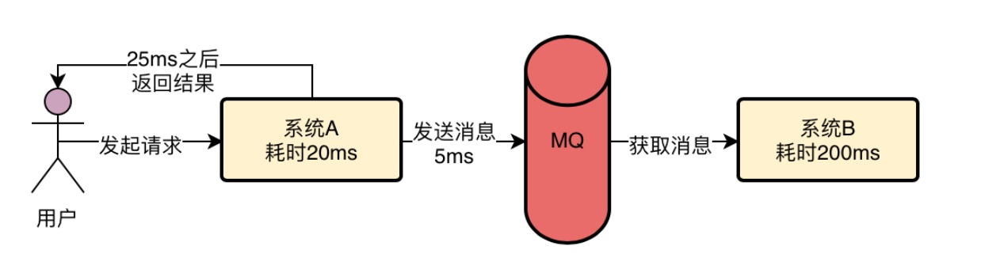
这样的话，对用户来说，是不是从原来等待220ms返回结果，变成现在只要25ms就可以返回结果了？
小猛听着都愣了，还有这套玩法？真是太棒了，消息中间件居然可以用来优化系统性能。
明哥接着说，现在我们说另外一个场景，还是上面那个图来举例。如果系统A同步调用系统B，那么按照我们说过的，是不是这属于系统间的耦合？因为系统A和系统B是耦合在一起的，互相之间会有影响。
那么如果系统B要是突然出现故障了，是不是会导致系统A调用系统B感知到这个故障？因为系统A调用系统B肯定是返回异常的，此时系统A是不是也得返回异常给用户？而且系统A是不是还要去处理这个异常？
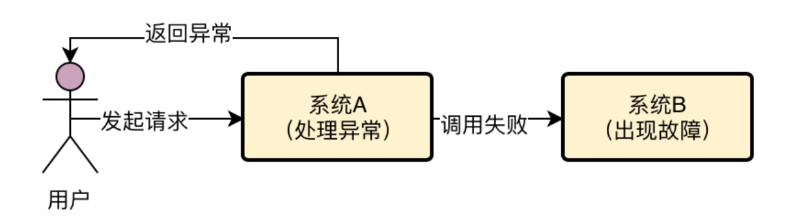
明哥说着画了一个示意图：
这一切都是因为系统A和系统B通过同步调用的模式耦合在了一起，所以一旦系统B出现故障，很可能会影响系统A也有故障
而且系统A还得去关心系统B的故障，去处理对应的异常，这是很麻烦的。
那么假设我们在系统A和系统B之间加入一个消息中间件，在这种情况下，系统A对系统B的调用仅仅是发送一个消息到MQ，然后就直接返回给用户了，后面对系统B就不管了。
此时系统B如果出现了故障，对系统A根本没影响，系统A也感觉不到。
明哥说着画了一个图出来。
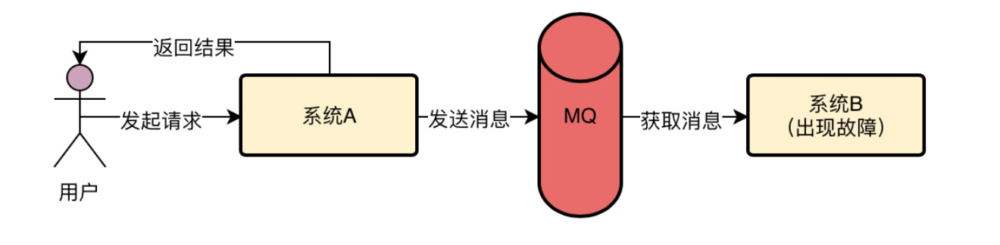
系统B故障，就成了他自己的事了，他要自己等故障恢复了，继续去完成他要干的活儿，此时就对系统A没任何影响了。
为什么会有这样的效果呢？因为通过引入MQ，两个系统实现了异步化调用，也就实现了解耦，系统A并没有跟系统B耦合，所以互相之间并没有任何影响。
小猛听到这里，豁然开朗，消息中间件还能让两个系统解耦，让他们俩互相之间没有任何影响，太有意思了！
接着明哥说：消息中间件还有最后一个特别牛的功能，叫做流量削峰。
假设系统A是不操作数据库的，因此只要多部署几台机器，就可以抗下每秒1万的请求，比如部署个20台机器，就可以轻松抗下每秒上万请求。
然后系统B是要操作一台数据库服务器的，那台数据库的上限是接收每秒6000请求，那么系统B无论部署多少台机器都没用，因为他依赖的数据库最多只能接收每秒6000请求。
明哥说着画出了一幅图。
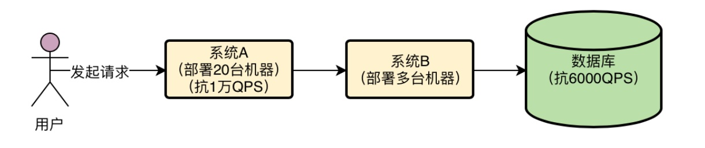
现在假设大量用户同时发起访问，系统A就是收到了1万QPS怎么办？
这时候，系统A会瞬间把1万QPS转发给系统B，假设你系统B也部署20台机器，系统B自己可以抗住1万QPS，那么数据库呢？
数据库是抗不下来1万QPS的，此时系统B如果对数据库发起1万QPS的请求，一定会瞬间压垮数据库的。
所以这时如果引入MQ，就可以解决这个问题了。MQ这个技术抗高并发的能力远远高于数据库，同样的机器配置下，如果数据库可以抗每秒6000请求，MQ至少可以抗每秒几万请求。
为什么呢？因为数据库复杂啊，他要能够支持你执行复杂的SQL语句，支持事务等复杂的机制，支持你对数据进行增删改查，听着简单，其实是很复杂的！所以一般数据库单服务器也就支撑每秒几千的请求。
但是MQ就不一样了，他的核心功能就是让你发消息给他，再让别人从他这里获取消息，这个就简单的多了，所以同等机器配置下，MQ一般都能抗几万并发请求。
所以只要你引入一个MQ，那么就可以让系统A把每秒1万请求都作为消息直接发送到MQ里，MQ可以轻松抗下来这每秒1万请求
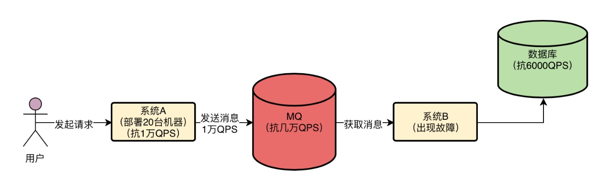
明哥说着画了一个图。
接着，系统b只要慢慢的从MQ里获取消息然后执行数据库读写操作即可，这个获取消息的速度是系统B自己可以控制的，所以系统B完全可以用一个比较低的速率获取消息然后写入数据库，保证对数据库的QPS不要超过他的极限值6000。
明哥说着对图补充了一下。
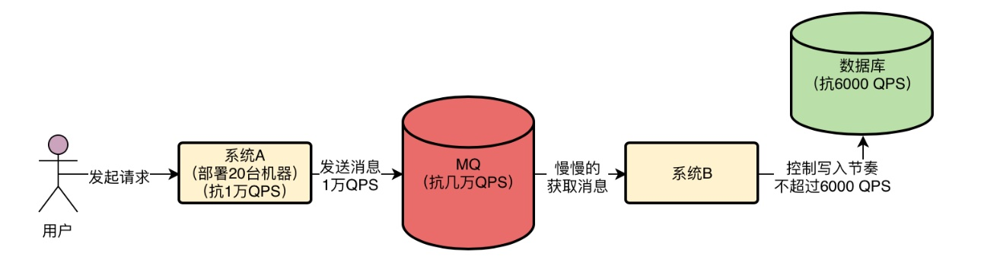
这个时候因为系统A发送消息到MQ很快，系统B从MQ消费消息很慢，所以MQ里自然会积压一些消息
不过不要紧，MQ一般都是基于磁盘来存储消息的，所以适当积压一些消息是可以的。
当系统A的高峰过去，每秒可能就恢复到1000 QPS了，此时系统b还是以每秒6000QPS的速度获取消息写入数据库，那么自然MQ里积压的消息就会慢慢被消化掉了。
所以这就是MQ进行流量削峰的效果，系统A发送过来的每秒1万请求是一个流量洪峰，然后MQ直接给扛下来了，都存储自己本地磁盘，这个过程就是流量削峰的过程，瞬间把一个洪峰给削下来了，让系统B后续慢慢获取消息来处理。
小猛听着都呆了，MQ还能这么玩儿？这简直是一个神功利器啊！看起来很棘手的系统性能差、耦合性高、流量洪峰等问题，只要引入MQ居然就可以搞定了，真是太好了！
明哥说：好了，今天就先讲到这里，你回去一定要好好的吸收MQ的这些知识，他到底是什么，用来干什么的，有哪些功能。